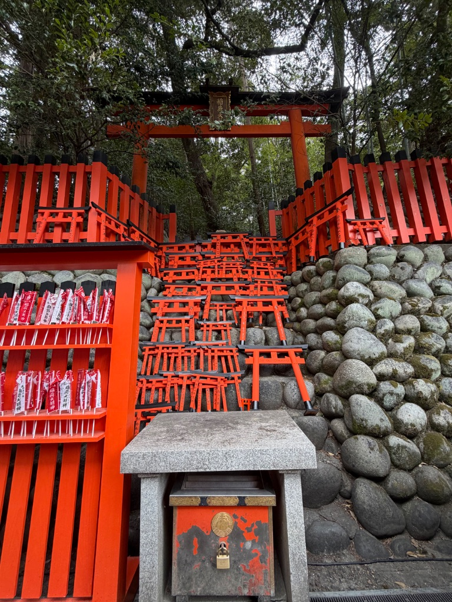

今日も伏見稲荷に行ってきた⛩️
何度来ても心が洗われる特別な場所。千本鳥居と一ノ峰からの絶景✨

※ 千本鳥居の朱色のトンネル。何度来ても飽きない美しさ
今日も伏見稲荷に行ってきた。
伏見稲荷のためだけに京都に来るっていうのも、
もう何回目だろう。
神社が好きで、特に伏見稲荷は
年間で何回も訪れている。
いつ来ても千本鳥居のあの朱色のトンネルは最高。
何度見ても飽きない。
🌅 朝早めの参拝
今日は朝早めに京都駅に着いて、
いつものようにJR奈良線で稲荷駅へ。
駅を降りたらすぐ目の前に鳥居が見えて、
今日もテンション上がる⛩️
早朝だったから観光客もまだ少なくて、
静かにお参りできた
これが早朝参拝の良いところ✨
🙏 仕事と家族への祈願
今日も手を合わせて、
仕事のこと、家族のことをお願いした。
- ✅ 最近大きいプロジェクト任されてて、うまくいくように祈願
- ✅ いつも支えてくれてる家族の健康と幸せ
- ✅ 両親への感謝
⛩️ 千本鳥居をくぐる
千本鳥居をくぐりながら奥社まで歩くのは、
何回来ても気持ちいい。
朱色の鳥居が続く道を歩いてると、
なんか心が落ち着く。
今日も木漏れ日がきれいで、
朝の光が鳥居の間から差し込んでた✨

※ 奉納された小さな鳥居と絵馬。多くの人の願いが込められている
⛰️ 山頂まで登山
途中の茶屋で少し休憩しながら、
山頂まで登った。
石段はやっぱりきついけど、
登るたびに景色が変わって、
京都の街が眼下に広がっていくのが最高。
一ノ峰まで登り切った時の達成感は
何度来ても気持ちいい
山頂から見る京都の景色と、
稲荷山の自然に囲まれた静けさ。
ここに来られることに感謝🙏
🎫 お守りと絵馬
帰り道、今日もお守りと絵馬を買った。
絵馬には
「家族の健康」と「仕事の成功」
って書いて奉納。
お守りはいつも持ち歩いてる。
✨ 特別な場所
伏見稲荷は自分にとって特別な場所。
年に何回も来てるけど、
来るたびに心が洗われる感じがする。
- ⛩️ 千本鳥居の美しさ
- ✨ 神聖な空気感
- 🌲 稲荷山の自然の力強さ
だから何度でも来てしまう。
次は家族も連れてきたいな。
きっとこの素晴らしさを感じてくれるはず。
今日も心が落ち着いて、
新しいエネルギーをもらえた。
また明日から頑張れそう💪
伏見稲荷、今日もありがとう。
また来るね⛩️
📝 メモ
- ⏱️ 所要時間：約3時間（山頂往復）
- 🎒 持ち物：歩きやすい靴、飲み物、タオル
- ⭐ おすすめ：早朝参拝（人少ない、静か）
- 🍶 次回：伏見の酒蔵も行ってみたい